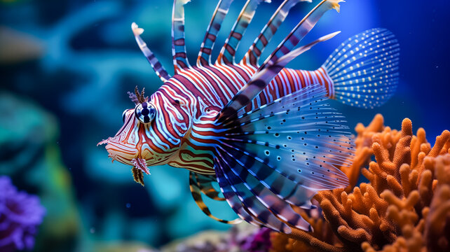
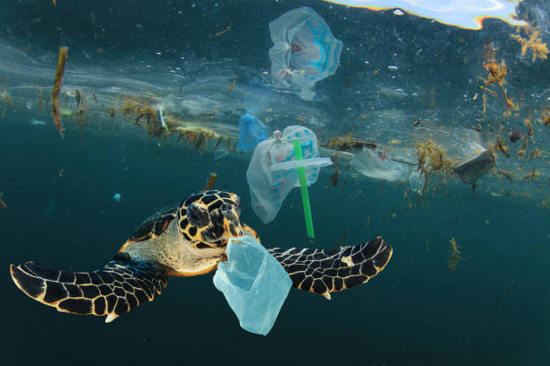
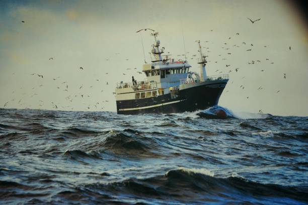

veja alguns problemas
em que o ecoshield faz a diferença
Migração de Espécies Exóticas
A introdução de espécies não nativas nos ecossistemas marinhos pode causar um desequilíbrio significativo. Espécies exóticas, como o peixe-leão em Fernando de Noronha, competem com as espécies nativas por recursos, alterando as cadeias alimentares e prejudicando a biodiversidade local. Esse fenômeno pode levar à extinção de espécies nativas e à degradação do ecossistema.

Perda de Biodiversidade
A extinção de espécies marinhas devido à poluição, pesca excessiva e destruição de habitats reduz a resiliência dos ecossistemas oceânicos. A biodiversidade é crucial para a estabilidade e o funcionamento dos ecossistemas, e sua perda pode ter consequências catastróficas para a saúde dos oceanos e para a humanidade, que depende desses recursos para alimentação, economia e bem-estar.

Intervenção Humana Geral
Atividades humanas, como pesca excessiva, exploração de recursos marinhos e desenvolvimento costeiro, têm causado uma degradação acelerada dos habitats marinhos. A pesca excessiva esgota as populações de peixes, enquanto a exploração de recursos e o desenvolvimento costeiro destroem habitats essenciais, como recifes de coral e manguezais. Essas atividades comprometem a sustentabilidade dos recursos marinhos e a resiliência dos ecossistemas.
